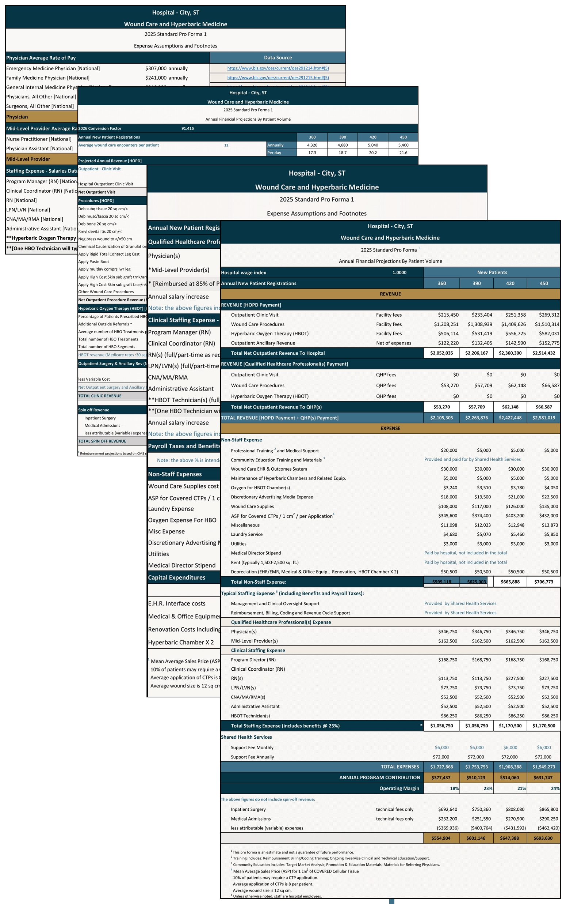
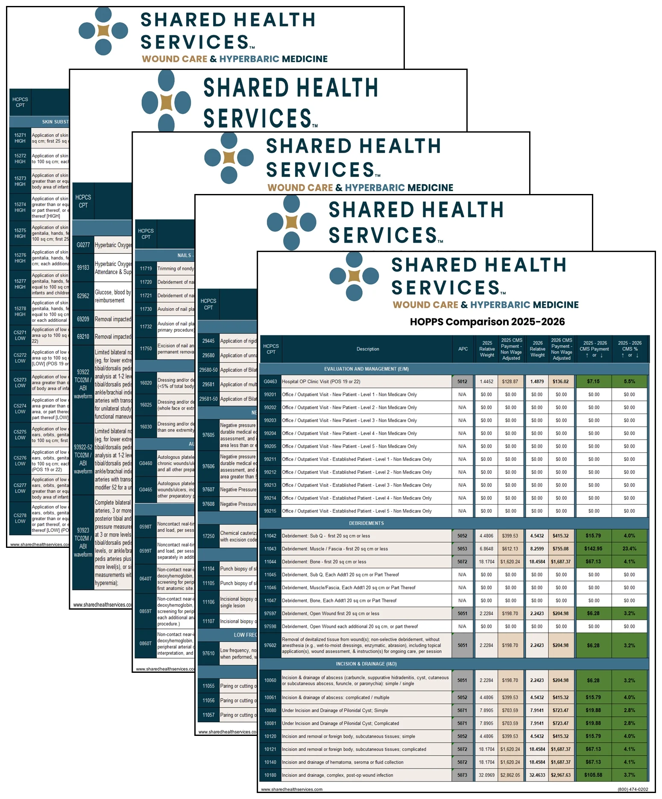
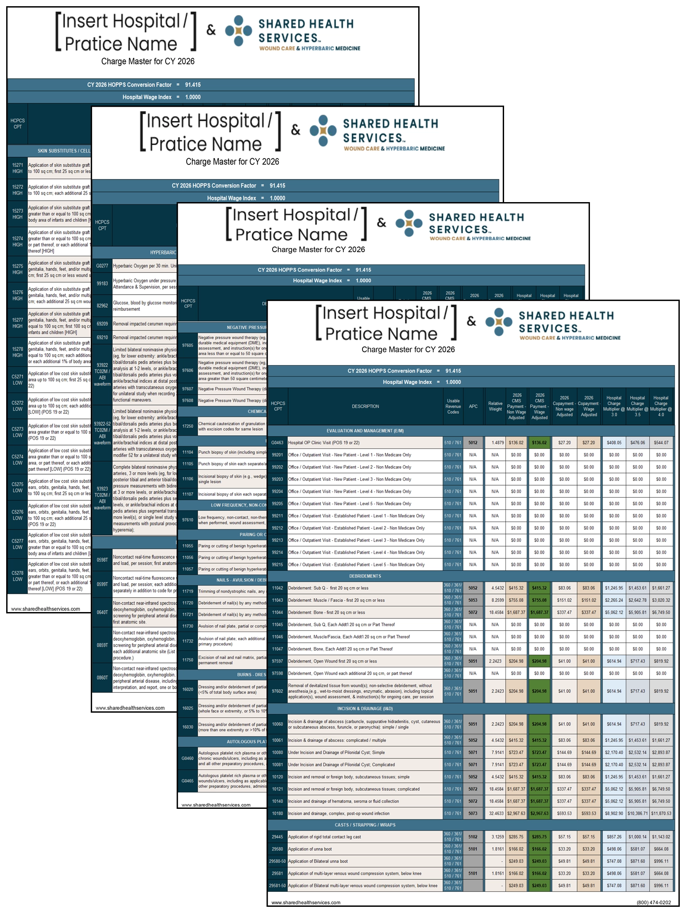
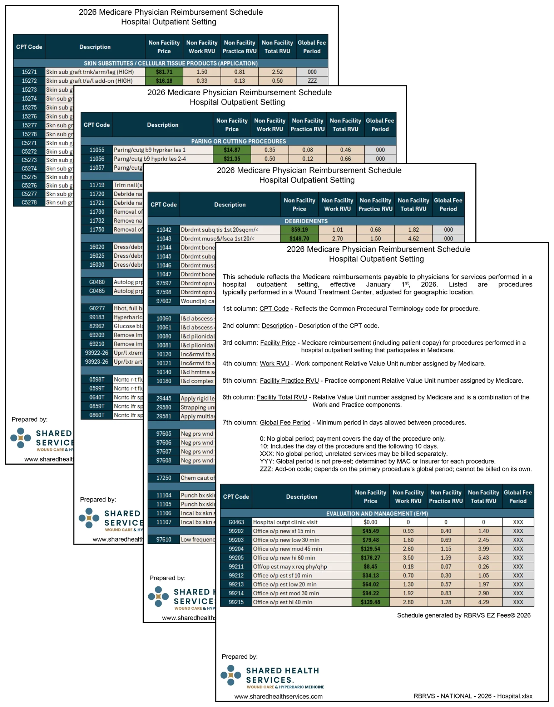
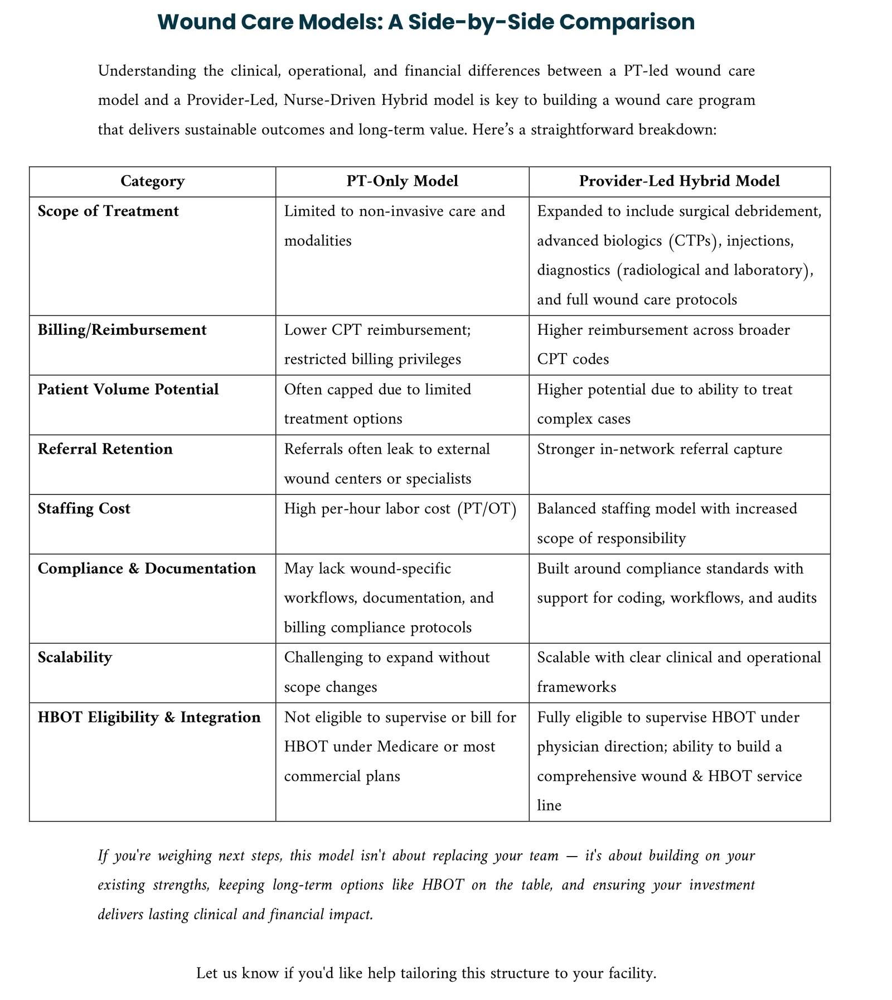

Matthew A. Davis, MBA
Operations & Corporate Development · Systems Design · Strategic Communications · Independent R&D

Tools · Shared Health Services
Finance & Strategy
Every Number Shown
Financial projections are most convincing when they tell you what you want to hear and least trustworthy when you can’t see how they were built. These tools show their work: reimbursement changes, staffing costs, patient volumes, wage indexes, fee schedules and operating models laid out so they can be reviewed, challenged and adjusted before a decision is made.
The pro forma started as an inheritance: a black-and-white spreadsheet descended from a late-1990s model, which handed a hospital a bottom line without showing the mechanics underneath it. I rebuilt it so every assumption is visible and easy to follow, with staffing costs sourced to published labor data and volumes run across four scenarios, so a hospital or practice can see exactly why the number comes out the way it does.
Every year the payment rates change. When the hospital outpatient final rule publishes, the work starts: pull the new rates, compare every code partners have historically billed against the prior year, check for new codes that apply, and show the change, up or down, line by line.
That comparison feeds a master chargemaster built at a wage index of 1.0, with every code weighted so that one change, the partner’s own wage index, recalculates the expected reimbursement on every line. Once the template exists, a facility-specific chargemaster is quick work.
Physician practices take longer. The physician fee schedule isn’t settled until Congress is done with the conversion factor, and late changes have landed after January 1. Once it’s final, the same approach produces each practice’s chargemaster and a fee schedule for every partner. The version shown is the hospital setting; the practice version follows the same layout.
And when hospitals with legacy, therapy-only wound clinics started asking what a modern program looks like, a one-page side-by-side answered it: a PT-only model against a provider-led, nurse-driven hybrid, across scope, reimbursement, volume, referral retention, staffing cost, compliance, scalability and hyperbaric eligibility.




